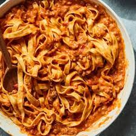

Ragu alla Bolognese is Italy's national dish. It became popular in the 1930s. After World War II, bolognese sauce, which is a meat-type sauce, was eaten with dried spaghetti. The sauce was made in the late 18th century by Alberto Alvisi. His dish can be found in the 1891 cookbook by Pellegrino Artusi.